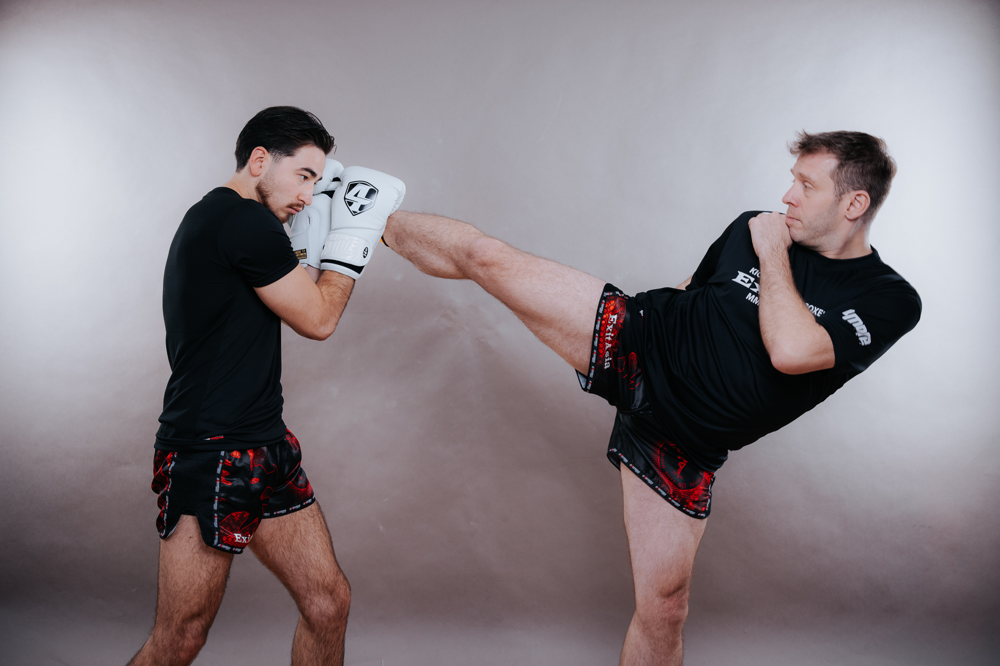

Die Frage kommt in der Halle meistens nach dem dritten oder vierten Monat: „Wann darf ich eigentlich zur Prüfung?“ Dahinter steckt fast immer eine zweite Frage, die keiner laut stellt: Was wollen die Prüfer da sehen? Beides lässt sich genauer beantworten, als es die meisten Gürtel-Übersichten tun. Gürtel gibt es beim Kickboxen zwar, eine einheitliche Ordnung dafür aber nicht. Jeder Verband schreibt seine eigene.
Für diesen Artikel haben wir gelesen, was die Verbände selbst veröffentlichen: die Prüfungsordnung der WAKO Deutschland, das Prüfungsprogramm der WKU, die Ausbildungsordnung der ISKA Germany und die Regelwerke der Verbände in Österreich und der Schweiz. Wo wir eine Zahl nennen, steht sie in einem dieser Dokumente oder auf der Seite des genannten Vereins. Wo ein Verband nichts veröffentlicht, sagen wir das. Wenn du noch nicht sicher bist, ob Kickboxen überhaupt dein Sport ist, lies vorher unseren Vergleich der Kampfsportarten.
Wichtig vorweg: Verbindlich sind immer die Ordnung deines Verbands und die Praxis deines Vereins. Vereine legen Termine und Gebühren selbst fest. Die Angaben unten stammen aus den veröffentlichten Regeln der Verbände, geprüft am 3. Oktober 2026.
Welche Gürtelfarben gibt es im Kickboxen, und in welcher Reihenfolge?
In Deutschland ist die Reihenfolge fast überall gleich: Weiß, Gelb, Orange, Grün, Blau, Braun, Schwarz. Weiß ist der Startgurt, Schwarz der erste Meistergrad, auch 1. DAN genannt. Die fünf Farben dazwischen sind die Schülergrade. Diese Grundreihenfolge findest du bei der WAKO Deutschland, im Programm der WKU und im ISKA-orientierten Programm, nach dem unsere Trainer in der Halle unterrichten. Auch WAKO Switzerland nutzt dieselben fünf Farben bis zum Schwarzgurt.
Und der rote Gürtel? Den gibt es auch. In unserer Halle kommt nach Braun der rote Gürtel und erst danach Schwarz. In der Reihenfolge der WAKO Deutschland kommt Rot dagegen nicht vor. Auch die Ausbildungsordnung der ISKA Germany kennt Rot: Für den 1. Kyu, die letzte Stufe vor Schwarz, nennt sie ausdrücklich den „Braun- bzw. Rotgurt“. In Österreich ist Rot den Meistern vorbehalten: Ab dem 6. DAN tragen sie Rot-Weiß, ab dem 9. DAN Rot-Schwarz. Welche Farben du bis zum Schwarzgurt trägst, hängt also vom Verband deines Vereins ab.
Zwischengurte: Gelb-Orange, Orange-Grün und Co.
Zwischen zwei Farben gibt es oft halbe Stufen, also zweifarbige Gürtel. Die WAKO Deutschland kennt für Erwachsene Gelb-Orange, Orange-Grün, Grün-Blau, Blau-Braun und Braun-Schwarz, alle ausdrücklich optional. Bei Kindern und Jugendlichen gehören sie dagegen zum Programm: Dort sind es elf Stufen von Weiß-Gelb bis Braun-Schwarz. Kinder unter sieben Jahren tragen vor dem Gelbgurt zusätzlich weiße Zwischengürtel wie Weiß-Orange oder Weiß-Grün.
Die WKU macht Kinder- und Erwachsenengürtel sogar optisch unterscheidbar. Volle Erwachsenengürtel sind einfarbig, volle Kindergürtel haben einen weißen Streifen in der Mitte. Für Kinder zwischen drei und sieben Jahren gibt es ein eigenes Programm mit zwölf Abschnitten, das die WKU „Panda-Programm“ nennt.
Violett, Hellbraun, Rot: die Abweichungen
In Österreich sieht die Leiter anders aus. Die Ausbildungsordnung des ÖBFK, des Österreichischen Bundesfachverbands für Kick- und Thaiboxen, zählt sieben Schülergrade: Gelb, Orange, Grün, Blau, Violett, Hellbraun und Dunkelbraun. Erst danach kommt Schwarz. Wer von Wien nach München zieht, muss sich also auf eine andere Farbleiter einstellen.
Rot taucht an zwei Stellen auf. Die Ausbildungsordnung der ISKA Germany spricht beim 1. Kyu ausdrücklich von „Braun- bzw. Rotgurt“ und nutzt neben Kyu auch den Begriff Kup. Und ganz oben tragen Meistergrade beim ÖBFK ab dem 6. DAN Rot-Weiß, ab dem 9. DAN Rot-Schwarz.
Haben die Gürtelfarben eine Bedeutung?
Keine offizielle. Manche Übersichten schreiben jeder Stufe eine symbolische Bedeutung zu, aber in keiner der Prüfungsordnungen, die wir gelesen haben, steht etwas dazu. Die Farbe zeigt, wie weit du in der Ausbildung bist. Mehr regeln die Verbände nicht.
Was bedeuten Kyu und DAN, und warum passen die Nummern nicht zusammen?
Kyu heißen die Schülergrade, DAN die Meistergrade ab dem Schwarzgurt. Bei den Kyu wird rückwärts gezählt: Je kleiner die Zahl, desto höher der Grad. Bei den DAN läuft es andersherum, der 1. DAN ist der erste Schwarzgurt.
Das Problem: Die Nummern gelten nicht verbandsübergreifend. Beim ÖBFK ist Gelb der 7. Kyu, bei WAKO Switzerland der 5. Schülergrad. Die WAKO Deutschland verzichtet ganz auf Kyu-Nummern und spricht von Ausbildungsstufen 1 bis 5. In der Ausbildungsordnung der ISKA Germany steht der Blaugurt an einer Stelle als 5. Kyu, der Braungurt als 3. Kyu. Ein „4. Kyu“ sagt ohne den Verband dazu also wenig. Wenn du wechselst, nenn immer Farbe und Verband.
Wie unterscheiden sich WAKO, WKU und ISKA bei den Gürteln?
In der Farbleiter kaum, in den Regeln drumherum deutlich. Die Tabelle fasst zusammen, was die Verbände selbst veröffentlichen.
Gürtel, Mindestalter und Prüfer im Überblick
| Verband | Farbgurte (Erwachsene) | Zwischengurte | 1. DAN ab | Wer prüft |
|---|---|---|---|---|
| WAKO Deutschland | Gelb, Orange, Grün, Blau, Braun (Weiß als Start) | Optional, z. B. Gelb-Orange | 18 Jahren | Mindestens ein lizenzierter Prüfer, ein vereinsfremder wird empfohlen |
| WKU (WKUWORLD/GCO) | Weiß, Gelb, Orange, Grün, Blau, Braun | Optional, bei Kindern die Regel | 18 Jahren | DAN-Träger mit WKU-Prüferstempel bis Blau-Braun; Braun vor der Kommission oder zwei Prüfern ab 3. DAN |
| ISKA Germany | Kyu-System; vollständige Ordnung nicht öffentlich | Nicht öffentlich dokumentiert | Nicht öffentlich dokumentiert | C-Lizenz bis Blaugurt, B-Lizenz bis 1. Kyu mit Beisitzer, A-Lizenz alle Farbgurte |
| ÖBFK (Österreich) | Gelb, Orange, Grün, Blau, Violett, Hellbraun, Dunkelbraun | In der Ordnung nicht genannt | 18 Jahren (davor Jugend-DAN) | Prüfungskollegium im Verein, ein Mitglied mit mindestens 1. DAN |
| WAKO Switzerland | Gelb, Orange, Grün, Blau, Braun | Im Reglement nicht genannt | 18 Jahren (16 mit Zusatztest Wettkampfpunkte) | Experten: bis Orange mit Braungurt, ab Grün mit 1. DAN |
Quellen: Prüfungsordnung der WAKO Deutschland (Stand 20.01.2019), WKUWORLD/GCO-Prüfungsprogramm (2. Fassung, gültig ab 2021), Ausbildungsordnung der ISKA Germany, ÖBFK-Ausbildungsordnung (Stand 10.04.2026), Technische Reglemente für Schüler- und Meistergrade von WAKO Switzerland.
Drei Unterschiede sind uns beim Lesen sofort aufgefallen.
Erstens der Low Kick. Im Erwachsenenprogramm der WAKO Deutschland kommt er bei den Grundtechniken nicht vor. Geprüft werden Vorwärts-, Halbkreis-, Seitwärts-, Außenrist-, Axt- und Hakentritt, dazu Fußfeger und gesprungene Tritte. Das WKU-Programm prüft den Low Kick dagegen schon ab dem Orangegurt, Knie und Ellbogen ab Grün, und verlangt beim Braungurt zwei Sparringsrunden im Thaiboxen. Wer vor allem für den Ring trainiert, merkt den Unterschied sofort. Wie sich die Stile grundsätzlich unterscheiden, steht in unserem Artikel Muay Thai vs. Kickboxen.
Zweitens der Aufwand neben der Matte. Die WKU arbeitet ab dem Braungurt mit einem Laufzettel. Darauf stehen Pflichten, die vor der Prüfung erledigt sein müssen. Für den 1. DAN sind das zwölf selbst geleitete Trainingseinheiten seit dem Braungurt, ein Kampfrichter-Seminar, drei Turniere als Kampfrichter und eine schriftliche Arbeit von mindestens fünf Seiten. Die WAKO Deutschland verlangt für den Schwarzgurt einen Erste-Hilfe-Kurs und drei kickboxspezifische Lehrgänge, darunter einen Kampfrichterlehrgang.
Drittens die Frage, wer prüfen darf. Bei der WAKO Deutschland reicht für Farbgurte ein lizenzierter Prüfer. Für den Meistergrad braucht es eine Kommission aus mindestens drei Prüfern, die selbst mindestens den angestrebten Grad tragen. Bei der ISKA Germany hängt es an der Prüferlizenz: Die C-Lizenz erlaubt Prüfungen bis zum Blaugurt, die B-Lizenz bis zum 1. Kyu mit einem Beisitzer, A-Prüfer dürfen alle Farbgurte allein abnehmen.
Eine vollständige Graduierungsordnung mit Wartezeiten und Mindestalter haben wir von der ISKA Germany online nicht gefunden (Stand 3. Oktober 2026). Wer nach ISKA geprüft wird, fragt am besten direkt im Verein nach dem aktuellen Prüfungsprogramm.
Wie lange dauert es bis zum nächsten Gürtel?
Bei der WAKO Deutschland liegen zwischen zwei Farbgurten mindestens sechs Monate Vorbereitung, vor dem Braungurt und vor dem Schwarzgurt je ein Jahr. Andere Verbände sind am Anfang schneller: Beim ÖBFK und bei der WKU sind es für die ersten Gürtel drei Monate.
Für die häufige Frage nach dem ersten Gürtel heißt das: Bis zum Gelbgurt brauchst du nach WAKO Deutschland sechs Monate, nach WKU und ÖBFK drei, bei WAKO Switzerland fünf. Die Schweizer koppeln ihre Fristen übrigens an ein Trainingspensum. Sie gelten bei 12 bis 15 Trainingsstunden pro Monat, und die Abstände wachsen von Stufe zu Stufe: fünf, sechs, sieben, acht, neun und zehn Monate bis zum Schwarzgurt.
Summe der Wartezeiten bis zum 1. DAN, Erwachsene
Summe der Mindestwarte- bzw. Vorbereitungszeiten für Erwachsene ohne optionale Zwischengurte, jeweils ab der letzten Prüfung gerechnet. Gestrichelt: die zusätzliche Vierjahresregel, die ÖBFK und WAKO Switzerland für den 1. Meistergrad aufstellen.
Wichtig ist das Wort mindestens. Eine Wartezeit ist eine Untergrenze, kein Anspruch. Bei der WKU zählt ausdrücklich nur die Zeit, in der du aktiv trainierst oder unterrichtest. Und zur Prüfung zugelassen wirst du vom Ausrichter, in aller Regel also von deinem Verein.
Wie lange dauert es bis zum schwarzen Gürtel?
Rechnest du die Mindestzeiten zusammen, landest du bei der WAKO Deutschland bei 48 Monaten, also vier Jahren. Bei der WKU sind es 37 Monate. ÖBFK und WAKO Switzerland kämen rechnerisch auf 42 und 45 Monate, ziehen aber eine zweite Grenze ein: vier Jahre Mitgliedschaft im Verband in Österreich, vier Jahre Kickboxen in der Schweiz. Unsere Erfahrung aus der Halle: Wer es in dieser Mindestzeit schafft, hat praktisch keine Trainingspause gemacht. Verletzungen, Prüfungsphasen und Umzüge sind in keiner Frist eingerechnet.
Was wird bei welchem Gürtel geprüft?
Bei der WAKO Deutschland sind alle Prüfungen gleich aufgebaut, nur der Inhalt wächst. Es gibt acht Prüfungsblöcke: Kampfstellung und Fortbewegung mit Schattenkickboxen, Grundtechniken, Kombinationen, Abwehrkombinationen, Modellsparring, freies Sparring, Selbstverteidigung und Theorie. Mit jeder Stufe kommen neue Techniken dazu, und das gesamte Programm der Stufen davor wird ebenfalls verlangt.
Wartezeit und Inhalte je Stufe (WAKO Deutschland, Erwachsene)
| Gürtel | Vorbereitung | Neue Techniken | Partner & Sparring | Theorie |
|---|---|---|---|---|
| Gelb | 6 Monate | Jab, Punch, Faustrückenschlag; Frontkick mit vorderem und hinterem Bein | Aktive Abwehr gegen diese Techniken; Rolle vorwärts und rückwärts | Notwehr |
| Orange | 6 Monate | Vorderer und hinterer Haken; Halbkreistritt (Roundhouse Kick); Schattenkickboxen | Abwehr gegen Haken und Halbkreistritt; Befreiung aus dem Schwitzkasten | Regeln Pointfighting |
| Grün | 6 Monate | Aufwärtshaken; Seitwärtstritt, auch aus der Drehung | Modellsparring; freies Sparring kann verlangt werden | Regeln Leicht- und Vollkontakt |
| Blau | 6 Monate | Dubletten; Außenristtritt, auch gedreht; Axttritt | Modellsparring; Selbstverteidigung im Kreis; Abwehr von Stockangriffen | Regeln Formen; Geschichte des Kickboxens |
| Braun | 1 Jahr | Fußfeger innen und außen; Hakentritt, auch aus der Drehung | Modellsparring; Abwehr von Messerangriffen | Lehrbeispiel: eine Technik vermitteln |
| Schwarz (1. DAN) | 1 Jahr plus Vorbereitungslehrgang | Gesprungene Vorwärts-, Halbkreis-, Seitwärts- und Hakentritte; Doppeltritte am Partner | Modellsparring; Verteidigung am Boden | Erste-Hilfe-Kurs, drei Lehrgänge inklusive Kampfrichterlehrgang |
Auszug aus Teil C der Prüfungsordnung der WAKO Deutschland (Stand 20.01.2019). Hand- und Fußtechniken werden an der Pratze geprüft, Kombinationen aus Hand- und Fußtechniken kommen in jeder Stufe dazu.
Zwei Regeln in der Ordnung werden oft unterschätzt. Die Abwehr wird ausschließlich aktiv geprüft: Nach dem Blocken oder Ausweichen kommt immer ein Konter. Und gegen jede Einzeltechnik musst du ein Verteidigungskonzept zeigen, das auch dann funktioniert, wenn der Partner kombiniert.
Der Halbkreistritt, den die meisten als Roundhouse Kick kennen, kommt nach WAKO-Ordnung zum Orangegurt. Wie du ihn sauber aufbaust, zeigen wir Schritt für Schritt im Artikel Roundhouse-Kick in 4 Wochen.
Und bei der WKU?
Das WKU-Programm prüft breiter. Jede Prüfung beginnt mit Aufwärmen, Kraft und Koordination, beim Gelbgurt etwa mit zweimal acht Liegestützen und viermal zehn Sekunden Standwaage. Sparring gehört schon ab dem Weißgurt dazu, in den unteren Gürteln in Zeitlupe oder mit leichtem Kontakt. Beim Grüngurt sind es sechs Runden: Kicks, Fäuste, Light Contact und Pointfighting. Ab 40 Jahren müssen Tritte nicht mehr gesprungen werden, ab 45 sinkt die Zahl der Sparringsrunden.
Und im ISKA-Umfeld?
Weil wir von der ISKA Germany kein vollständiges Programm gefunden haben, können wir hier nur zeigen, wie unsere Trainer in der Halle unterrichten. Ihr Programm orientiert sich an der ISKA und verteilt die Techniken anders als die WAKO-Ordnung: Low Kick und Mittelkick kommen schon zum Gelbgurt, Drehtechniken wie Spinning Hook Kick und Tornado Kick erst zum Braungurt, gesprungene Drehkicks zum Schwarzgurt. Gleiche Farbe heißt also nicht gleiches Programm.
Wie läuft eine Gürtelprüfung ab?
Bei der WAKO Deutschland ist der äußere Ablauf festgeschrieben, und er ähnelt dem in den meisten Vereinen:
- Du erscheinst pünktlich, der Prüfer kontrolliert die Voraussetzungen, also Wartezeit und Sportpass.
- Alle Prüflinge stellen sich nach Ausbildungsstufe auf, es folgt das gemeinsame Angrüßen.
- Der Prüfer stellt den Ablauf vor. Paare darf er jederzeit trennen oder neu mischen.
- Die Prüfungsblöcke werden abgenommen, vom Schattenkickboxen bis zur Theorie.
- Zum Schluss gibt es das Ergebnis, die Urkunde und das gemeinsame Abgrüßen.
Wann hast du bestanden?
Die WAKO Deutschland bewertet jeden Block mit Schulnoten von 1 bis 6. Aus allen Blöcken wird der Durchschnitt gebildet, bestanden ist die Prüfung mit 3,5 oder besser. Schwache Blöcke kannst du also ausgleichen, mit einer Ausnahme: Mit einer 6 in einem einzigen Block ist die ganze Prüfung nicht bestanden. Ob der Prüfer dir die Einzelnoten zeigt, liegt in seinem Ermessen. Er kann dir und deinem Trainer aber Hinweise auf Mängel geben.
In der Schweiz gilt beim Schwarzgurt eine andere Logik. Konditions- und Technikteil müssen jeweils mindestens mit der Note 4,0 bestanden werden, und der Technikteil wird nur abgenommen, wenn die Kondition vorher bestanden ist. Wer die Hauptprüfung nicht besteht, wartet ein Jahr bis zum nächsten Versuch.
Was du zur Prüfung mitbringen musst
- Deinen Sportpass mit gültiger Jahresmarke. Bei der WAKO Deutschland ist er Pflicht, bei der WKU zusätzlich mit Arztstempel.
- Den Gürtel, den du gerade trägst. Nicht den neuen, den gibt es erst nach dem Bestehen.
- Schutzausrüstung für Partnerübungen, Modellsparring und Sparring nach den Wettkampfregeln deines Verbands. Bei Budo Sport Wien zum Beispiel gehören ab Orangegurt Zahnschutz, Schienbeinschutz, Tiefschutz und Kopfschutz dazu.
- Keinen Schmuck, keine Piercings. Die WAKO-Ordnung schließt sichtbare, gefährdende Gegenstände ausdrücklich aus.
- Bei höheren Gurten die Nachweise: Erste-Hilfe-Kurs, Lehrgänge, bei der WKU den ausgefüllten Laufzettel. Fehlt dort etwas, gibt es weder Gürtel noch Urkunde, bis alles nachgereicht ist.
Was kostet eine Gürtelprüfung im Kickboxen?
Eine einheitliche Gebühr gibt es nicht. Die WAKO Deutschland überlässt die Prüfungsgebühr für Farbgurte dem Ausrichter, also in der Regel dem Verein, und die für Meistergrade den Landesverbänden. Wie das konkret aussieht, zeigen zwei veröffentlichte Beispiele:
- Budo-Keller Bonlanden (prüft nach dem WKU-Programm): Prüfungsgebühr 15 bis 40 €, DAN-Prüfung 200 €, Jahresbeitrag 35 €, laut Prüfungsseite des Vereins.
- WAKO Switzerland: Die Prüfung zum 1. Meistergrad kostet 200 Franken, bar am Prüfungstag zu zahlen.
Dazu kommen fast immer der Sportpass, die jährliche Marke des Verbands und die Vereinsmitgliedschaft. Frag vor der Anmeldung, was in der Gebühr steckt. Bei der WKU deckt sie laut Anmeldeformular Urkunde, Gürtel, Passeintrag und Registrierung ab.
Was ist ein DAN, und wie viele gibt es?
DAN heißen die Meistergrade, getragen wird dazu der schwarze Gürtel. Wie viele es gibt, regelt jeder Verband selbst: Die WKU führt sie bis zum 10. DAN, bei der WAKO Deutschland kannst du die ersten vier durch Prüfung erwerben. Den Unterschied zu den Farbgurten formuliert die WKU deutlich: DAN-Grade gelten nicht mehr als Schüler-, sondern als Lehrergrade. Deshalb geht es in DAN-Prüfungen auch ums Unterrichten, um Regelkunde und um Erste Hilfe.
Die Vorbereitungszeiten für den 1. bis 4. Meistergrad liegen bei der WAKO Deutschland bei einem, zwei, drei und vier Jahren. Für den 2. Meistergrad kommen eine Kampfrichter-C-Lizenz und eine schriftliche Arbeit dazu, für den 3. eine Trainer-C-Lizenz im Breitensport, für den 4. die C-Lizenz im Leistungssport. Ab dem 5. Meistergrad wird nur noch verliehen. Die WKU nennt dazu Wartezeiten und Mindestalter für jeden Grad: den 2. DAN ab 20 Jahren, den 3. ab 23, den 5. ab 32 und den 10. DAN ab 70 Jahren.
In Österreich verlangt der ÖBFK für die ersten drei Meistergrade unter anderem vier Jahre Mitgliedschaft, die Übungsleiter-Ausbildung und ein Vorbereitungsseminar. Bei WAKO Switzerland kommen für den Schwarzgurt eine Vor- und eine Hauptprüfung, ein Kuatsu-Kurs, ein Zusatztest und ein aktueller Strafregisterauszug zusammen.
Ab welchem Alter kann man im Kickboxen Gürtel machen?
Bei der WAKO Deutschland ist der Gelbgurt frühestens ab sieben Jahren möglich, davor gibt es weiße Zwischengürtel. Für die höheren Kinder- und Jugendgurte gelten Mindestalter: Blau-Braun ab 14, Braun ab 16 und Braun-Schwarz ab 17 Jahren. Braun-Schwarz heißt dort Jugendschwarzgurt, ist aber ausdrücklich kein Meistergrad. Zur ersten Meistergradprüfung kannst du ab 18 antreten.
Die WKU vergibt einen eigenen Kinder-Schwarzgurt. Mit 16 dürfen dessen Träger zur Braungurt-Prüfung der Erwachsenen, mit 18 zum 1. DAN. In Österreich gibt es für unter 18-Jährige mit entsprechendem Können den Jugend-DAN. In der Schweiz liegt das Mindestalter für den Schwarzgurt bei 18 Jahren, mit dem Zusatztest Wettkampfpunkte bei 16.
Kann man eine Gürtelprüfung online machen?
Eine Verbandsgraduierung nicht. Bei der WAKO Deutschland musst du Mitglied eines Mitgliedsvereins sein, einen gültigen Sportpass vorlegen und vor mindestens einem lizenzierten Prüfer antreten. Beim ÖBFK nimmt ein Prüfungskollegium im Verein ab, in der Schweiz ein Experte des Verbands. Partnerübungen, Modellsparring und Sparring gehören zur Prüfung, und die gehen nur mit einem echten Gegenüber.
Vorbereiten kannst du dich dagegen gut zu Hause, und zwar auf alles, was du allein üben kannst: saubere Einzeltechniken auf beiden Seiten, Kombinationen in der Reihenfolge, wie sie im Programm stehen, und die Theorie. Das Sparring und die Partnerarbeit holst du dir im Verein. Ein Zertifikat, das dir eine Website ohne Prüfer ausstellt, ersetzt keinen Eintrag im Sportpass.
Für genau diese Vorbereitung haben wir unsere Gürtelkurse gebaut, eine Stufe pro Kurs. Wie sie aufgebaut sind und was sie kosten, liest du weiter unten.
Welche Fehler sehen Prüfer immer wieder?

Was folgt, stammt aus der Trainingspraxis, aus vielen Prüfungsvorbereitungen in der Halle. Es sind Beobachtungen, keine Studie. Diese Fehler fallen in Gürtelprüfungen am häufigsten auf:
- Die Hand fällt beim Kicken. Der Tritt ist sauber, aber die Deckung geht mit nach unten. In Abwehrkombinationen und im Modellsparring sieht das jeder Prüfer sofort.
- Nur die starke Seite geübt. Die WAKO-Ordnung verlangt viele Tritte ausdrücklich mit vorderem und hinterem Bein, die WKU zählt Kicks links und rechts. Wer nur seine Schokoladenseite trainiert hat, verliert hier Punkte.
- Kombinationen zu schnell. Vor Publikum und mit hohem Puls werden aus vier sauberen Techniken drei halbe. Langsamer und vollständig wirkt in der Prüfung besser als schnell und verwaschen.
- Kondition unterschätzt. Die Prüfung endet nicht nach dem Technikteil. Beim WKU-Braungurt stehen allein im Aufwärmen 300 Kicktechniken auf dem Programm. Wer beim Schattenkickboxen sein Pulver verschießt, hat im Sparring nichts mehr übrig.
- Zu hart im Partnerteil. Modellsparring heißt: kontrolliert arbeiten. Wer seinen Partner trifft, um Eindruck zu machen, zeigt das Gegenteil von dem, was geprüft wird.
- Theorie und Papiere vergessen. Notwehr, Regelkunde, Geschichte: Bei der WAKO wird die Theorie in jeder Stufe abgefragt. Und ein gültiger Sportpass ist dort Teilnahmevoraussetzung, ohne ihn trittst du gar nicht erst an.
Ein Punkt hat mit Technik nichts zu tun. Viele trainieren in den letzten zwei Wochen so viel wie nie zuvor und stehen dann müde auf der Matte. Die Woche vor der Prüfung ist zum Schärfen da, nicht zum Aufholen. Woran du merkst, dass es zu viel wird, steht in unserem Artikel Übertraining erkennen.
Wie bereitest du dich auf die Gürtelprüfung vor?
Mit einem Plan, der beim Prüfungsprogramm anfängt und nicht beim Gefühl. Diese Reihenfolge hat sich bei uns bewährt:
- Besorg dir das aktuelle Prüfungsprogramm deines Verbands, am einfachsten über deinen Trainer, und prüf die Wartezeit seit deiner letzten Graduierung.
- Geh das Programm Technik für Technik durch, auf beiden Seiten. Filme dich dabei, von vorn und von der Seite.
- Übe die Kombinationen genau in der Reihenfolge, in der sie im Programm stehen. Bei der WAKO sind sie in der Ordnung einzeln aufgeführt.
- Lern die Theorie deiner Stufe und die aller Stufen davor.
- Prüf zwei Wochen vorher Pass, Jahresmarke, Schutzausrüstung und Nachweise.
- Plan die letzte Woche leichter: gleiche Technik, weniger Umfang, genug Schlaf.
Wie helfen dir unsere Gürtelkurse bei der Prüfungsvorbereitung?
Bei Hey Coach bekommst du für jede Gürtelstufe einen eigenen Online-Kurs, vom Weißgurt bis zum Schwarzgurt. Nils, Heiko und Jana zeigen darin jede Technik deiner Stufe, langsam erklärt und aus mehreren Perspektiven gefilmt. Nils ist Kickbox-Europameister und trägt den 5. DAN der ISKA, Heiko den 3. DAN, Jana ist ISKA-Weltmeisterin. Du wiederholst die Lektionen so oft, wie du willst, bis die Technik auf beiden Seiten sitzt.
Sieben Stufen, ein Kurs pro Gürtel
| Gürtel | Was du lernst | Lektionen | Preis |
|---|---|---|---|
| Weißgurt | Stand, Schrittfolge, Deckung, Atemtechnik, Meidbewegungen | ca. 24 | kostenlos |
| Gelbgurt | Jab, Punch, Frontkick, Low Kick, Mittelkick, Kicks blocken | ca. 29 | 24,99 € |
| Orangegurt | Haken, Körperhaken, Cross, Side Kick, Knie | ca. 22 | 24,99 € |
| Grüngurt | Uppercut, Spinning Backfist, High Kick, Axe Kick, Feger | ca. 14 | 24,99 € |
| Blaugurt | Hook Kick, Back Heel Kick, Flatter-Kick, Jump Front Kick | ca. 13 | 24,99 € |
| Braungurt | Spinning Hook Kick, Spinning Side Kick, Spin Sweep, Tornado Kick | ca. 12 | 24,99 € |
| Schwarzgurt | Jump Spinning Hook Kick, Ohrfeigen-Kick, Cartwheel Kick, Scorpion Kick, Superman Punch | ca. 12 | 24,99 € |
Zusammen 126 Lektionen und gut vier Stunden Video. Einmal zahlen, kein Abo, Zugang mindestens 24 Monate ab Kaufdatum. Alle Preise inkl. 19 % MwSt. Stand: Oktober 2026.
Den Weißgurt kannst du kostenlos ausprobieren. Danach kaufst du nur die Stufe, auf die du dich gerade vorbereitest. Wer alle sieben Gürtel will, nimmt den Kickboxen-Komplettkurs für 99 €: alle 126 Lektionen, Zugang zur Community und eine Teilnahmebescheinigung, sobald du alle Lektionen abgeschlossen hast.
Was die Kurse nicht können: Sie ersetzen keine Prüfung. Den Gürtel bekommst du nach der Prüfung in deinem Verein, vor einem lizenzierten Prüfer, und Sparring und Partnerübungen brauchen ein echtes Gegenüber. Alle Gürtelkurse ansehen
Das Wichtigste in vier Sätzen
Die Reihenfolge der Kickbox-Gürtel lautet in Deutschland Weiß, Gelb, Orange, Grün, Blau, Braun, Schwarz, mit optionalen Zwischengurten und Abweichungen wie Rot vor Schwarz in ISKA-Schulen oder Violett und Hellbraun in Österreich. Bei der WAKO Deutschland liegen zwischen den Farbgurten mindestens sechs Monate, vor Braun und Schwarz je ein Jahr, macht mindestens vier Jahre bis zum 1. DAN, und den gibt es frühestens mit 18. Geprüft werden Technik, Kombinationen, aktive Abwehr, ab Grün Modellsparring, dazu Selbstverteidigung und Theorie, und eine einzige 6 in einem Block reicht zum Durchfallen. Die Prüfung selbst legst du immer im Verein vor einem lizenzierten Prüfer ab, vorbereiten kannst du dich überall.